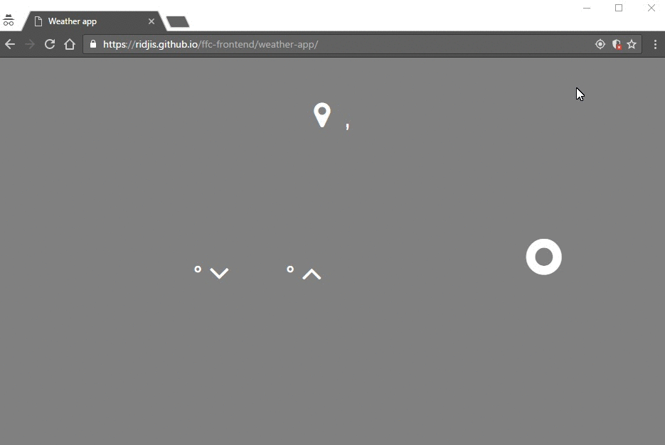

Because of protocols incosistency (GitHub is using HTTPS but weather API HTTP) you're probaby not going to see weather information, so you should "load unsafe script" as is shown in pic bellow. ⬇

×